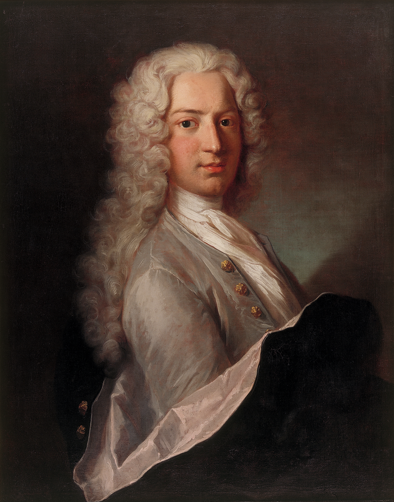
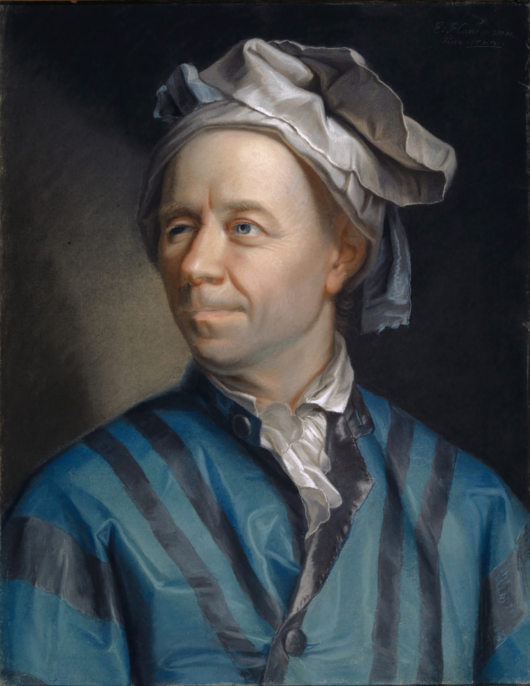

Week 2, Lecture 5: Monotone Convergence and Squeeze Theorem

Welcome to Lecture 5: Taming the Wild Sequences
Take a deep breath—you have successfully climbed over the steepest conceptual wall in this entire course. By mastering the formal $\epsilon\text{-}N$ definition and the Algebraic Limit Laws in Lecture 4, you built the unbreakable logical foundation of real analysis. You should be incredibly proud of that milestone.
As we close out Week 2, our focus on sequences shifts from building the foundation to actually using it. The algebraic tools you learned are powerful, but they have a catch: they only work if you already know the exact target limit, or if the sequence is perfectly cooperative. What happens when you face a sequence whose final destination is completely invisible, or an expression so chaotic that standard algebra shatters?
Don't worry—we aren't going back to scratchpad proofs. Today, we step outside the algebraic sandbox and hand you the advanced toolkit. You will learn to use the Monotone Convergence Theorem to mathematically guarantee a sequence converges even when you are flying blind, apply it to capture the elusive Euler's number ($e$), and master the Squeeze Theorem to force wildly oscillating sequences into submission. Let's dive in!
📌 Lecture 5 Topics
1. The Monotone Convergence Theorem (The Escape Hatch)
In Lecture 4, every $\epsilon\text{-}N$ proof and Algebraic Limit Law you used came with a strict prerequisite: you had to know the exact target limit $L$ before you could begin. You cannot set up the distance calculation $|a_n - L| < \epsilon$ if $L$ is a complete mystery.
But what happens when you encounter a sequence defined by a bizarre recursive formula or an infinite sum, and you have absolutely no idea what number it approaches?
This is where the Monotone Convergence Theorem (MCT) acts as your mathematical escape hatch. It bridges the gap between known and unknown limits by guaranteeing a simple, physical truth: if a sequence only ever moves in a single direction (monotonic), and it is physically trapped by an impassable barrier (bounded), it has absolutely no choice but to converge. It allows you to definitively prove a limit exists, even when you are flying blind.
Imagine a sequence as a machine operating under two strict physical laws:
- The Engine (Monotonicity): The sequence is strictly increasing. Every new term steps higher than the last. It never reverses direction.
- The Glass Ceiling (Boundedness): There is a hard, impenetrable ceiling (an upper bound $M$) that the sequence is mathematically forbidden from crossing.
If an engine pushes upward forever, but is physically trapped beneath a ceiling, it cannot escape to infinity, and it cannot retreat. It has only one option: it must eventually crush flat against a final barrier.
📈 Theorem 2: The Monotone Convergence Theorem (MCT)
$$\lim_{n\to\infty} a_n = \sup \{a_n : n \in \mathbb{N}\}$$
$$\lim_{n\to\infty} a_n = \inf \{a_n : n \in \mathbb{N}\}$$
What Is Happening
Why The System Does This
🎯 Worked Example: Flying Blind with a Recursive Sequence
Let's see the Monotone Convergence Theorem in action. Consider a sequence defined recursively:
If we write out the first few terms ($\sqrt{2}$, $\sqrt{2 + \sqrt{2}}$, $\dots$), the algebraic complexity explodes. We cannot easily isolate $n$ to do an $\epsilon\text{-}N$ proof, and we don't know the exact limit $L$. Here is how the MCT saves the day:
-
Step 1: Prove it is bounded above (The Ceiling).
We claim $a_n < 2$ for all $n$. We prove this by mathematical induction.- Base case: $a_1 = \sqrt{2} \approx 1.414 < 2$.
- Inductive step: Assume $a_k < 2$. Then $a_{k+1} = \sqrt{2 + a_k} < \sqrt{2 + 2} = \sqrt{4} = 2$. By induction, the sequence is bounded above by $M = 2$.
-
Step 2: Prove it is strictly increasing (The Engine).
We want to show $a_{n+1} > a_n$. Let's compare their squares:$$a_{n+1}^2 - a_n^2 = (2 + a_n) - a_n^2 = -(a_n^2 - a_n - 2) = -(a_n - 2)(a_n + 1)$$Since we just proved $a_n < 2$, the term $(a_n - 2)$ is strictly negative. Because all terms are positive, $(a_n + 1)$ is positive. Thus, $-( \text{negative} )( \text{positive} ) = \text{positive}$. Therefore $a_{n+1}^2 > a_n^2$, meaning $a_{n+1} > a_n$. -
Step 3: Invoke the Monotone Convergence Theorem.
Because $(a_n)$ is strictly increasing and bounded above, the MCT mathematically guarantees that a limit $L$ must exist. We have secured the legal right to use $\lim a_n = L$ without ever knowing what $L$ is! -
Step 4: Solve for the Limit.
Now that we possess the guarantee that $L$ exists, we can apply the Algebraic Limit Laws to the recursive formula:$$\lim_{n\to\infty} a_{n+1} = \lim_{n\to\infty} \sqrt{2 + a_n} \implies L = \sqrt{2 + L}$$Squaring both sides gives $L^2 = 2 + L \implies L^2 - L - 2 = 0 \implies (L - 2)(L + 1) = 0$. Since our sequence consists of strictly positive roots, $L$ cannot be $-1$. Thus, the limit is exactly $L = 2$. $\blacksquare$
2. Construction of Euler's Number $e$
While the concept of continuous compound interest led Jacob Bernoulli to first observe this mathematical constant in 1683, it was the brilliant 18th-century Swiss mathematician Leonhard Euler who truly unlocked its profound power. Euler was the first to designate this constant with the letter $e$ (around 1727) and systematically map its properties across different branches of mathematics.
Euler didn't just find a number; he proved that $e$ represents the fundamental rate of growth for all natural continuous processes. By proving that it can be defined as the infinite limit of $\left(1 + \frac{1}{n}\right)^n$, Euler hardwired $e$ into the very foundations of calculus, physics, and probability. Today, we are going to reconstruct his exact proof to show that this sequence safely converges.
🏛️ The Architects of $e$

In 1683, Swiss mathematician Jacob Bernoulli stumbled upon the constant while studying a question concerning compound interest. He imagined a bank account paying 100% interest per year. If compounded annually, you double your money ($2.00). If compounded semiannually, you get (1 + 1⁄2)2 = $2.25. Bernoulli realized that even if compounded continuously (infinitely fast), the total return doesn't shoot off to infinity—it hits a strict, unyielding financial and mathematical ceiling: approximately 2.71828. Though he couldn't evaluate it explicitly, he set the stage for its discovery.

Fifty years later, Leonhard Euler took Bernoulli's financial puzzle and transformed it into a cornerstone of pure mathematics. Euler calculated $e$ to 23 decimal places, proved that it is an irrational number (its decimal expansion goes on forever without repeating), and formally introduced the letter $e$ to represent it in 1727. He demonstrated that $e$ is not just a growth factor for money, but the underlying engine governing radioactive decay, population dynamics, and complex wave mechanics culminating in Euler's Identity.
Unpacking the Algebra: Where do the factorials come from?
Before we formally define Euler's number as a limit, we have to deal with a formidable piece of algebra: expanding $a_n = \left(1 + \frac{1}{n}\right)^n$ using the Binomial Theorem. If textbooks throw this at you as a wall of symbols, it looks like magic. Let's break down what is actually happening behind the scenes.
1. What is a factorial really? (The Over-Counting Fix)
An exclamation mark like $2!$ or $3!$ is just a counting tool. When you expand an $n$-th power, you are choosing which parentheses to pull the $\frac{1}{n}$ from. Because choosing slot A then slot B is the exact same pair as slot B then slot A, you end up double-counting. The factorial in the denominator (like $2! = 2 \times 1$ or $3! = 3 \times 2 \times 1$) is literally just a correction factor to remove that duplication.
2. Decoding the "n choose k" Notation & Mechanically Building the Terms
The Binomial Theorem relies on a shorthand notation written with giant parentheses: $\binom{n}{k}$, which is read aloud as "n choose k". It simply answers the question: "If I have a total pool of $n$ items (parentheses), how many ways can I pick a group of $k$ of them?"
Mathematically, it is calculated using factorials like this:
Where does the Combinations Formula actually come from?
Let's completely step away from the $x$'s and $n$'s for a second. Let's build the formula $\frac{n!}{k!(n-k)!}$ from scratch using a concrete example so you can see exactly why every piece exists.
Imagine you have 5 different letters (A, B, C, D, E), and you need to grab a group of 3 letters.
Step 1: Making the picks (The Fundamental Counting Principle)
To pick 3 letters out of 5, you make three choices in a row:
- You have 5 options for your first pick.
- You have 4 options left for your second pick.
- You have 3 options left for your third pick.
This relies on the Fundamental Counting Principle. If you have a series of choices to make, you multiply the number of options at each step to find the total number of possible combinations.
To see why we multiply instead of add, think about getting dressed. Imagine you have 3 shirts (Red, Blue, Green) and 2 pairs of pants (Jeans, Khakis). How many different outfits can you make? If you just added the options, you'd say $3 + 2 = 5$ outfits. But look at the actual choices:
- If you wear the Red shirt, you can pair it with Jeans or Khakis (2 outfits).
- If you wear the Blue shirt, you can pair it with Jeans or Khakis (2 outfits).
- If you wear the Green shirt, you can pair it with Jeans or Khakis (2 outfits).
For every single one of your 3 shirts, the timeline splits into 2 new branches for the pants. So you have $2 + 2 + 2$ outfits, which is exactly what multiplication is: $3 \times 2 = 6$ outfits.
The same branching logic applies to our letters. For every one of your 5 first picks, the timeline splits into 4 new paths. Then each of those paths splits into 3 more. Because every choice forces the timeline to branch out again, we multiply: $5 \times 4 \times 3 = 60$ possible ways to pick 3 letters.
Step 2: The First Factorial Trick (Chopping off the tail)
Mathematicians want to write $5 \times 4 \times 3$ using factorials. But a full $5!$ is too long: it is $5 \times 4 \times 3 \times \mathbf{2 \times 1}$. We need a way to mathematically "chop off" that $2 \times 1$ tail.
We do this by dividing by $2!$:
Translating to algebra: If you have $n$ total items (5) and you are picking $k$ of them (3), the unpicked "tail" you are chopping off is $(n-k)$ items long. So, to get your starting multiplication chain, the formula is: $\frac{n!}{(n-k)!}$.
Step 3: The Second Factorial Trick (Fixing the Over-Counting)
There is a major flaw in our 60-way count from Step 1. Our tree diagram treated order as sacred: it counted picking "A then B then C" as a completely different path than picking "C then B then A".
But if you are just grabbing a handful of letters to throw into a bag, the order doesn't matter. Once they are sitting inside the bag, {A, B, C} is the exact same group as {C, B, A}. Our list accidentally committed massive double-counting.
How many times did we over-count? ($3!$)
Let's isolate just one single group of three letters: A, B, and C. How many different ways can you shuffle or arrange that exact same group into a line?
- 3 options for the first position.
- 2 options for the second position.
- 1 option for the third position.
Multiplying those together gives $3 \times 2 \times 1 = \mathbf{3!}$ (or 6) different ways to write those same letters (ABC, ACB, BAC, BCA, CAB, CBA). Every single unique handful in our list has been bloated by a factor of exactly 6.
Step 3: The Second Factorial Trick (Fixing the Over-Counting)
There is a major flaw in our 60-way count from Step 1. Our tree diagram treated order as sacred: it counted picking "A then B then C" as a completely different path than picking "C then B then A".
But if you are just grabbing a handful of letters to throw into a bag, the order doesn't matter. Once they are sitting inside the bag, {A, B, C} is the exact same group as {C, B, A}. Our list accidentally committed massive double-counting.
How many times did we over-count? ($3!$)
Let's isolate just one single group of three letters: A, B, and C. How many different ways can you shuffle or arrange that exact same group into a line?
- 3 options for the first position.
- 2 options for the second position.
- 1 option for the third position.
Multiplying those together gives $3 \times 2 \times 1 = \mathbf{3!}$ (or 6) different ways to write those same letters (ABC, ACB, BAC, BCA, CAB, CBA). Every single unique handful in our list has been bloated by a factor of exactly 6.
The Algebraic Rule: Because every handful of size $k$ can be internally rearranged in $k!$ different ways, our initial ordered count bloated every group by a factor of $k!$. To find the true number of unique groups, we must divide our previous formula by $k!$.
Step 4: Putting it all together
We started with $\frac{n!}{(n-k)!}$ to make our initial picks, and then we divided that entire thing by $k!$ to erase the duplicates. Stick them together in the denominator, and you get the final formula:
What is the actual goal of expanding?
Before we connect our combinations formula to algebra, we have to look at the big picture. When you "expand" a binomial like $(1+x)^5$, your goal is to turn a compacted equation into a long, stretched-out polynomial. If you multiplied all five brackets together by hand and grouped the matching pieces, your final answer would form a staircase of powers from $x^0$ up to $x^5$:
The grand goal of the Binomial Theorem is to figure out exactly what numbers (coefficients) go into those blank $[?]$ boxes without having to do hours of tedious multiplication. To do this, mathematicians don't look at the whole equation at once. They shine a spotlight on one single box at a time.
The "Vending Machine" Rule of Multiplying Brackets
Let's figure out what goes in the $x^3$ box (which is the step where $k=3$). An exponent of $5$ means multiplying $5$ identical brackets together. Let's label them A through E so we don't lose track:
Think of these brackets as 5 vending machines in a row. Inside every machine, there are only two buttons: Button $1$ or Button $x$. To multiply this out, you must walk down the line, press exactly one button on every single machine, and multiply your 5 choices together.
How do you get an $x^3$? You have to press the $x$ button on exactly 3 machines, which forces you to press the $1$ button on the remaining 2 machines.
Notice that the $1$'s do absolutely nothing when multiplied! The only thing that matters is which handful of 3 machines gave you an $x$. Every time you pick a different group of 3 machines to donate an $x$, another $+ x^3$ pops out of the expansion:
- Pick $x$ from machines {A, B, C} (and $1$ from the rest) $\rightarrow \mathbf{x^3}$
- Pick $x$ from machines {A, D, E} (and $1$ from the rest) $\rightarrow \mathbf{x^3}$
- Pick $x$ from machines {B, C, E} (and $1$ from the rest) $\rightarrow \mathbf{x^3}$
Step 4: Putting it all together
We started with $\frac{n!}{(n-k)!}$ to make our initial picks, and then we divided that entire thing by $k!$ to erase the duplicates. Stick them together in the denominator, and you get the final combinations formula:
Step 4a The Big Picture: What is the actual goal of expanding?
When you "expand" a binomial like $(1+x)^5$, your goal is to turn a compacted equation into a long, stretched-out polynomial. If you multiplied all five brackets together by hand and grouped the matching pieces, your final answer would form a staircase of powers from $x^0$ up to $x^5$:
The grand goal of the Binomial Theorem is to figure out exactly what numbers (coefficients) go into those blank $[?]$ boxes without having to do hours of tedious multiplication. To do this, mathematicians don't look at the whole equation at once. They shine a spotlight on one single box at a time.
Step 4b The Distribution Rule: Selecting $1$ or $x$ from Each Bracket
When we multiply $n$ identical binomial factors together—like $(1+x)(1+x)\dots(1+x)$—algebraic distribution requires us to generate every possible product by choosing either $1$ or $x$ from every single bracket and multiplying those choices together.
To see how this works in practice, let's look at a small example: expanding $(1+x)^3$ (three brackets multiplied together).
Suppose we want to understand exactly how the coefficient for $x^3$ is generated. When we expand our five identical factors: $$(x+1)(x+1)(x+1)(x+1)(x+1)$$ algebraic distribution requires us to pick either $x$ or $1$ from every single bracket. To land on $x^3$, we must choose $x$ from exactly three brackets, which forces us to choose $1$ from the remaining two brackets.
Every single valid path multiplies those choices together: $$x \cdot x \cdot x \cdot 1 \cdot 1 = \mathbf{x^3}$$
To find the coefficient, we must list and count every unique way those 3 brackets can be chosen out of the 5 available factors:
- Pick $x$ from brackets {1, 2, 3} and $1$ from {4, 5} $\rightarrow x \cdot x \cdot x \cdot 1 \cdot 1 = \mathbf{x^3}$
- Pick $x$ from brackets {1, 2, 4} and $1$ from {3, 5} $\rightarrow x \cdot x \cdot 1 \cdot x \cdot 1 = \mathbf{x^3}$
- Pick $x$ from brackets {1, 2, 5} and $1$ from {3, 4} $\rightarrow x \cdot x \cdot 1 \cdot 1 \cdot x = \mathbf{x^3}$
- Pick $x$ from brackets {1, 3, 4} and $1$ from {2, 5} $\rightarrow x \cdot 1 \cdot x \cdot x \cdot 1 = \mathbf{x^3}$
- Pick $x$ from brackets {1, 3, 5} and $1$ from {2, 4} $\rightarrow x \cdot 1 \cdot x \cdot 1 \cdot x = \mathbf{x^3}$
- Pick $x$ from brackets {1, 4, 5} and $1$ from {2, 3} $\rightarrow x \cdot 1 \cdot 1 \cdot x \cdot x = \mathbf{x^3}$
- Pick $x$ from brackets {2, 3, 4} and $1$ from {1, 5} $\rightarrow 1 \cdot x \cdot x \cdot x \cdot 1 = \mathbf{x^3}$
- Pick $x$ from brackets {2, 3, 5} and $1$ from {1, 4} $\rightarrow 1 \cdot x \cdot x \cdot 1 \cdot x = \mathbf{x^3}$
- Pick $x$ from brackets {2, 4, 5} and $1$ from {1, 3} $\rightarrow 1 \cdot x \cdot 1 \cdot x \cdot x = \mathbf{x^3}$
- Pick $x$ from brackets {3, 4, 5} and $1$ from {1, 2} $\rightarrow 1 \cdot 1 \cdot x \cdot x \cdot x = \mathbf{x^3}$
Because there are exactly 10 distinct pathways that generate $x^3$, collecting and adding them all together gives us the final term: $10x^3$.
Click the highlighted 10 in the final polynomial below to inspect all 10 distinct bracket selection pathways.
Generalizing this to $n$ brackets: to get a power of $x^k$, we must choose $x$ from exactly $k$ brackets out of the $n$ total factors, and $1$ from the remaining $(n-k)$ brackets. Every such path evaluates to $x^k$, and the total number of times it appears is how many ways we can make that selection.
So, how many total $x^3$'s pop out to fill in our box? We just have to ask: "How many different ways can we pick 3 machines out of 5?"
This is the exact letter game we just solved! We use the combinations formula we built in Steps 1 through 3 to find the answer: $\binom{5}{3} = \frac{5!}{3!2!} = 10$ ways. Because there are $10$ unique groups of 3 machines, $x^3$ gets added to itself $10$ times. The number in our $[?]$ box is $10$.
Step 4c Putting It Into the Master Formula
When we generalize this logic from $5$ total machines to $n$ total machines, and from a specific step like $3$ to any step $k$ on the staircase, we get the complete blueprint for every single term in the expansion:
The Binomial Theorem is just this exact logic applied to every step of the staircase (from $k=0$ up to $k=n$) all added together:
Now, let's plug in $x = \frac{1}{n}$ to match our sequence $a_n = \left(1 + \frac{1}{n}\right)^n$ and watch how the algebra naturally cleans itself up for the first few terms:
These are the easy ones. The zeroth term is always just $1$. The first term is $n \cdot x = n \cdot \left(\frac{1}{n}\right) = 1$. So the sequence always starts with $1 + 1$.
Here we apply the formula: $\frac{n!}{2!(n-2)!} \left(\frac{1}{n}\right)^2$. Watch how the factorials cancel out:
Now, let's split the fraction apart and pair the $n$ terms up:
The exact same cancellation happens. The $(n-3)!$ gets wiped out, leaving three terms on top, paired with $n^3$ on the bottom:
3. The Final Collapsed Form
When you assemble all these pieces, the sprawling binomial expansion collapses into this clean, structured formula:
Look at what this does for us: every single term containing $n$ has $n$ in the denominator. As $n$ grows toward infinity, those correction terms vanish, leaving us with a pure sum of factorials that defines $e$!
When we assemble all these carefully grouped pieces, the sprawling binomial expansion collapses into the beautiful, structured form we need for our proof:
Comparing term-by-term with $a_{n+1}$, each factor $\left(1 - \frac{k}{n+1}\right) > \left(1 - \frac{k}{n}\right)$ is strictly larger, and $a_{n+1}$ has an additional positive term. Hence, $(a_n)$ is strictly increasing.
To establish boundedness above, replace each bracket with 1 and use $\frac{1}{k!} \le \frac{1}{2^{k-1}}$:
Because $(a_n)$ is increasing and bounded above by 3, the Monotone Convergence Theorem guarantees it converges. Its limit is Euler's number:
3. The Lottery Thought Experiment
If this algebra still feels a bit abstract, let's look at a concrete thought experiment that flips the structure of $a_n = \left(1 + \frac{1}{n}\right)^n$ inside out. Instead of continuous financial growth, imagine a game of chance.
Suppose you play a lottery where your odds of winning are exactly $1$ in $n$. To be fair, you buy $n$ tickets. What is the probability that you lose every single time?
- Your chance of losing a single draw is $1 - \frac{1}{n}$.
- Since each draw is independent, your chance of losing all $n$ draws is $\left(1 - \frac{1}{n}\right)^n$.
Notice how familiar that equation looks! But what happens if we scale this up to infinity? What if you have a 1-in-a-million chance and you play a million times? Or a 1-in-a-billion chance played a billion times?
As $n$ gets infinitely large, your chance of total failure doesn't drop to zero. Instead, it hits a strict mathematical floor governed by the exact same constant:
This shows that $e$ isn't just about compound interest—it is the universal speed limit governing the probability of extremely rare, independent events.
4. The Comparison Principle & Squeeze Theorem
$$\lim_{n\to\infty} a_n = L \quad \text{and} \quad \lim_{n\to\infty} c_n = L$$
then $(b_n)$ converges and $\lim_{n\to\infty} b_n = L$.🎯 Rigorous Proof of the Squeeze Theorem
Let $\epsilon > 0$. We want to find $N$ such that $n > N \implies |b_n - L| < \epsilon$.
- Since $a_n \to L$, $\exists N_1$ such that $n > N_1 \implies L - \epsilon < a_n < L + \epsilon$.
- Since $c_n \to L$, $\exists N_2$ such that $n > N_2 \implies L - \epsilon < c_n < L + \epsilon$.
Set $N = \max(N_0, N_1, N_2)$. Then for any $n > N$:
Hence $\lim b_n = L$. $\blacksquare$
5. Visualizing Squeeze Collapse: $\frac{\sin(n)}{n}$
🎯 Classic Example: Trapping $\frac{\sin(n)}{n}$
Because $-1 \le \sin(n) \le 1$, we have $-\frac{1}{n} \le \frac{\sin(n)}{n} \le \frac{1}{n}$. Since $\pm \frac{1}{n} \to 0$, the Squeeze Theorem yields $\lim \frac{\sin(n)}{n} = 0$.